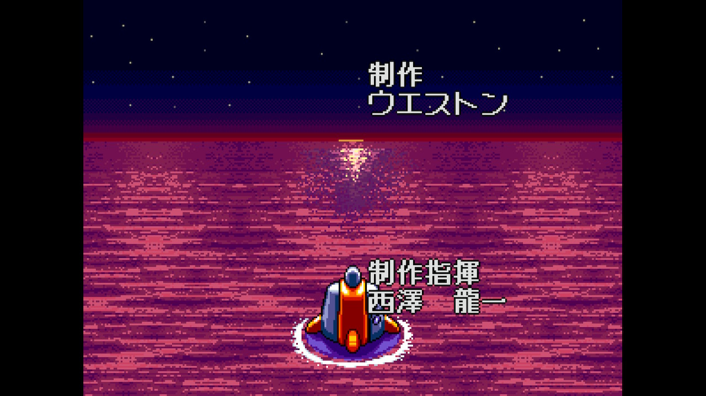

I want to discuss the importance of mastery in video games, featuring the revived arcade classic, Clockwork Aquario.

(Key art by Webstone)
The plot of the game centers around 3 heroes, Huck Londo (green haired male protagonist), Elle Moon (pink haired female protagonist), and Gush (the robot) stopping an evil entity, Dr.Hangyo from taking over the world. They set out on a journey to defeat various henchmen of the doctor, each having their unique designs and personalities. When the heroes defeat Dr.Hangyo, the game concludes with them escaping his laboratory, putting an end to his attacks on humanity. This ending is very charming and reminds me of the importance of not needing complex narratives to be appealing.
Moving on to the gameplay, the game is a simple platformer, so players will be running and jumping through obstacles. While this game takes notes from a popular platformer, Super Mario, with the jumping on enemies mechanic, it throws in a little spice of its own, allowing players to pick up enemies and throw them. This attack is powerful and is effective at clearing out enemies and racking up high scores. 
(ending screen)
The presentation of the game is also appealing to me, utilizing sprite based visuals. The game takes place in an aquatic setting, with many design motifs referencing the sea. The visuals are also accommodated by an enjoyable soundtrack, getting the player pumped. The track below is my favorite as it gets me excited to take on the game.
(Brisky-Frisky Stage 1)
Moving on to the gameplay, the game is a simple platformer, so players will be running and jumping through obstacles. While this game takes notes from a popular platformer, Super Mario, with the jumping on enemies mechanic, it throws in a little spice of its own, allowing players to pick up enemies and throw them. This attack is powerful and is effective at clearing out enemies and racking up high scores.
(gameplay by @sekoichi on Twitter)
Due to this game originating as an arcade title, it has to focus on the depth of content rather than the quantity. This often goes towards the difficulty of the game, being more demanding on the player to ensure they put more money into the arcade machine. Clockwork Aquario falls into the depth of difficulty, as it gives the player limited lives, limited health, and a precise attack window. This makes it more challenging for players, forcing them to master the way the game is played in order to progress in the game. Players will have to replay stages, finding strategies that will ensure a smooth play through.
This sort of philosophy relates to the game referenced by Sigmund Freud called ‘fort-da’, a game that had a child throwing things and retrieving them. Freud emphasized the repetition present in the game, as the child would improve their throwing distance and thus show more enthusiasm. Freud also took this story further and applied it to how it affects people in their day to day life, insisting that lives can be improved when repetition is involved. (Sigmund Freud: Beyond the Pleasure Principle)
Similarly, players will find themselves right back to level one, noticing that they are getting better and faster at traversing stages. There will be less mistakes and the game will be beaten in no time. Players get so skilled at these arcade games that they start making challenges for themselves, one popular challenge being the ‘1CC run’ (1 credit clear). These kinds of runs require flawless gameplay from players, making the stakes higher as you only get one try at beating the game. Those that attempt these kinds of challenges are pushed to learn the game inside and out to insure the perfect run.
(gameplay by Jason the Witch from Twitter)